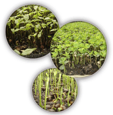

| |
O Viveiro Florestal – Mudar está localizado
em Agrolândia
(SC) no Alto Vale do Itajaí, onde produz mudas florestais
desde 1996. No início, além de produzir mudas
nativas, trabalhamos como implantação e manutenção
de reflorestamentos onde adquirimos vasta experiência.
Já produzimos mais de 3,5 milhões de mudas/ano,
porém preferimos diminuir a quantidade e aumentar
a qualidade do produto e atendimento produzindo hoje apenas
1,5
milhão de mudas de mais do que 70 espécies
arbóreas
entre nativas, Pinus, Eucalyptus e outras exóticas.
A produção de nativas é realizada em
tubetes, sacos e baldes plásticos. Para Eucalyptus
e Pinus utilizamos tubetes cônicos com estrias internas.
Entregamos em toda a região sul do País com
frete próprio
em caminhão baú devidamente preparado para
o transporte de mudas. Ocupamos uma área própria
de 3,0 ha. As sementes nativas são coletadas na região
e também compradas. As sementes de Pinus e Eucalyptus
são adquiridas em fontes idôneas como: International
Paper, IPEF, Klabin e Rigesa. |
 |